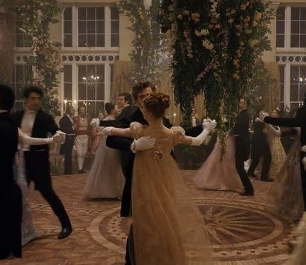

Agenda del Ton
Se inaugura una nueva temporada

Queridos lectores, las invitaciones comienzan a circular y los salones de Londres se preparan para recibir a sus invitados más distinguidos. Esta temporada promete noches inolvidables, donde la música, la elegancia y las buenas compañías serán protagonistas.
Baile de máscaras de los Bridgerton. Violet Bridgerton abre las puertas de su hogar para una velada de antifaces, vestuarios deslumbrantes y misteriosas identidades. Sin duda, una de las citas más esperadas.
Recepción en honor a la reina Charlotte. Una ocasión para lucir las mejores galas y obtener la aprobación de Su Majestad, cuya mirada atenta no deja escapar ningún detalle.
Velada musical en Mayfair. Una noche dedicada a la música de cámara, donde las melodías acompañarán las conversaciones y, quizás, algún encuentro inesperado.
Picnic en los jardines. Lejos de los grandes salones, las familias más distinguidas disfrutarán de una tarde al aire libre. Una oportunidad perfecta para conversar sin tanta formalidad.
Y recuerden, queridos lectores: las invitaciones son solo el comienzo. Lo verdaderamente interesante ocurre cuando las puertas se cierran y los rumores empiezan a circular.
El evento de la temporada
El acontecimiento que conquistó al Ton

Queridos lectores, si hay una velada digna de quedar grabada en la memoria del Ton, es el magnífico baile de máscaras organizado por Violet Bridgerton. Entre antifaces, candelabros y vestidos extraordinarios, los invitados se preparan para una noche en la que las apariencias pueden engañar y ningún detalle pasa inadvertido.
La celebración no solo deslumbra por su elegancia, sino también por el misterio que envuelve a sus asistentes. ¿Quién se esconde detrás de cada máscara? ¿Qué secretos se revelarán antes de que termine la música? Sin duda, una ocasión en la que la curiosidad será tan protagonista como el propio baile.
Y recuerden, estimados lectores: una máscara puede ocultar un rostro, pero jamás garantiza que un secreto permanezca a salvo. Esta autora estará atenta a cada detalle.
Aprendé a bailar
El arte del vals

Queridos lectores, ninguna velada está completa sin una buena danza. Entre giros elegantes y movimientos coordinados, el vals se convirtió en uno de los bailes de salón más emblemáticos, ideal para compartir una pieza y, quizás, despertar algún que otro sentimiento.
¿Les gustaría deslizarse por la pista con la gracia de los protagonistas del Ton? Los invitamos a descubrir este baile y practicar sus pasos con nuestro tutorial para principiantes.
El vals, paso a paso
Una guía para aprender los movimientos básicos del vals en pareja y prepararse para brillar en el próximo baile.
Ver tutorial de vals en YouTube